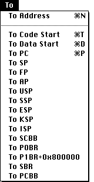

|  |
This set of commands is used for moving to the appropriate location in the Memory Dump window.
To Address
A dialog box prompts for the address to go to. Address may be entered in hexadecimal (eg. 0x200) or in decimal (eg 512). A label (data or code) from the program may also be entered. If the Physical Memory window is the front window then this option scrolls the Physical Memory rather than Memory Dump window.
To Code Start, To Data Start
To Code Start and To Data Start moves to the start of the code segment and data segment respectively and select the byte at that memory location.
To PC, To SP, To FP, To AP
To PC, SP, FP, and AP moves to the location pointed to by the current value of the respective register.
To USP, To SSP, To ESP, To KSP, To ISP, To P0BR
To USP, SSP, ESP, KSP, ISP, P0BR moves to the location pointed to by the current value of the respective internal processor register.
To P1BR + 0x800000
To P1BR + 0x800000 moves to the location pointed to by the current value of the P1BR internal processor register + 0x800000. This moves to the end of the P1 Page table.
To SCBB, To SBR, To PCBB
To SCBB, SBR, PCBB moves to the virtual address corresponding to the current physical address of the respective register. As these registers hold physical addresses not virtual addresses, MacVax assumes the system will always place the SCBB at 0x80000000, the SBR at 0x80000A00 and the PCBB at 0x7FFFFE00 in virtual space.
|